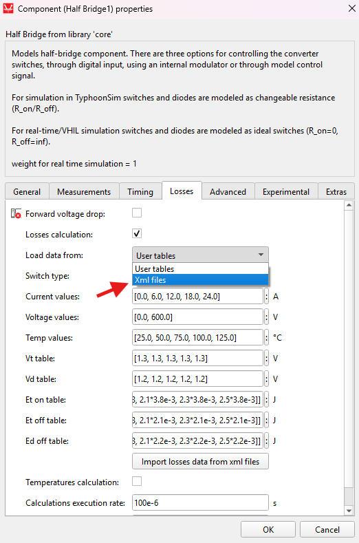
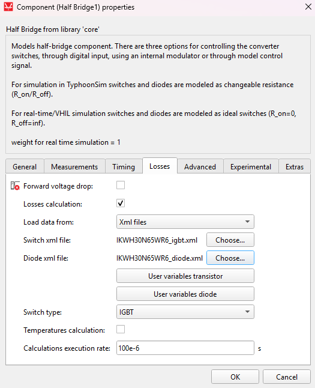
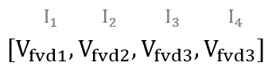
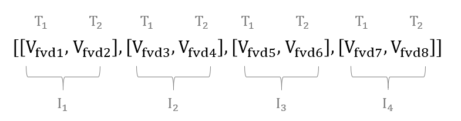
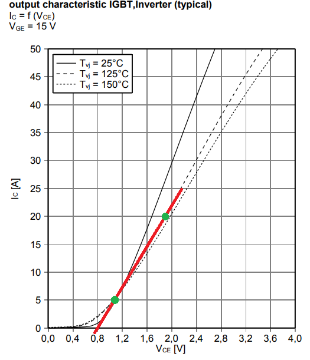
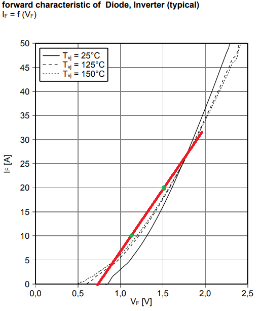
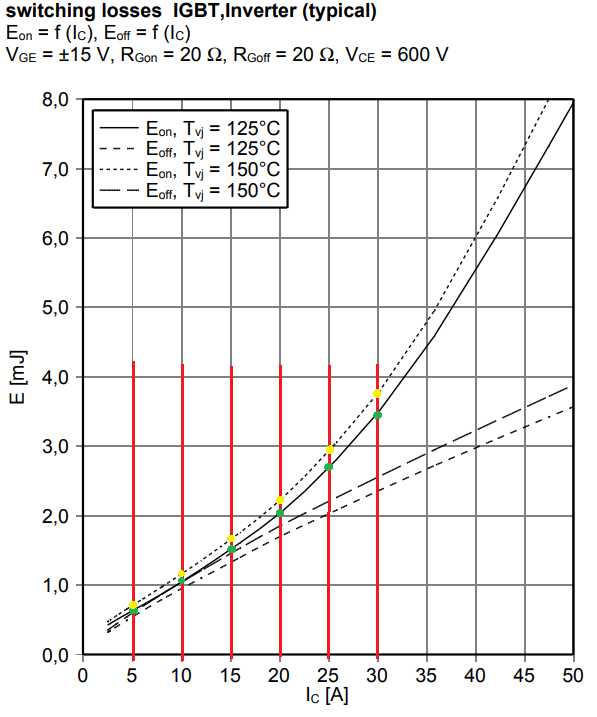
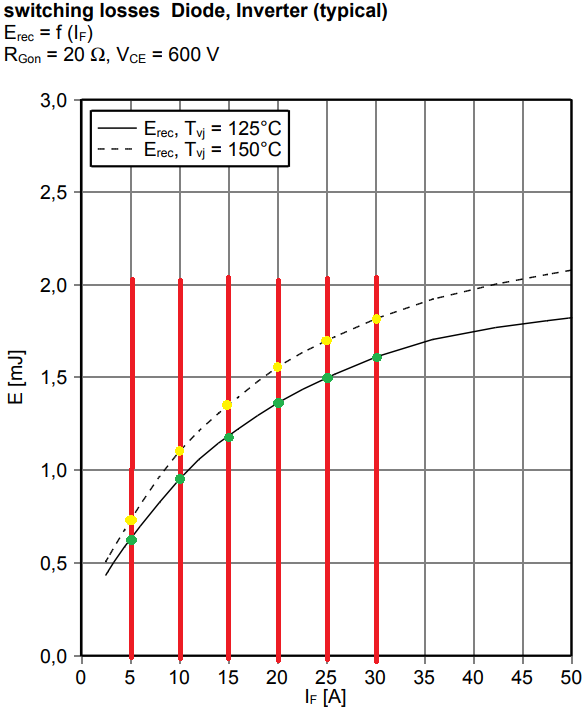
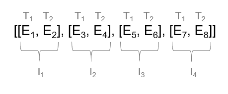
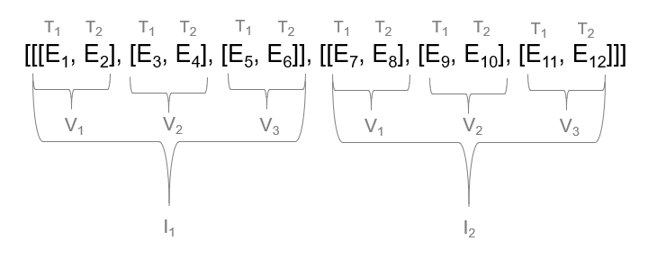

Importing power losses data
This section describes how to import power losses data from a manufacturer's datasheet or predefined XML files into the Typhoon HIL toolchain
Import power losses data from XML files
Power losses data can either be imported from xml files or loaded manualy into the power loss properties. To load losses data from standardized XML files, first select Load data from: xml filesfrom the combo box, as can be seen in Figure 1. Power losses data can be imported from standardized XML files using the XML buttons for the Switch and Diode elements located on the component Mask, both files need to be selected for the data to be loaded. Supported types of XML files are those that provide data for IGBT, MOSFET, and Diode switching elements. Losses data can be defined as Table only, Table and formula and Formula only. Additional user defined tables and variables can also be present in the xml files. Two buttons will appear if the loaded xml files contain user defined variables, as is shown in Figure 2. Clicking on these buttons will open a window in which the variable values can be set. Buttons won't appear if xml files contain no variables. Once the data is imported, changing the XML files will not affect the loaded data, unless files are imported again.


User tables needs to be selected from Load data from combo box in order to load the data manually. Clicking the Import losses data from xml files will fill the properties with data from xml files. Properties won't be set if the files contain data in any format other than Table only. The Typhoon HIL implementation of power loss data assumes the same current, voltage, and temperature vectors for all imported power losses tables. Sometimes the Switch (IGBT or MOSFET) and Diode vectors, can be slightly different because they are located in different files. When this is the case, the Switch vectors have priority for loss calculation. This means that any Diode vectors that are different will be substituted with vectors from the Switch element, and the Diode losses tables will be recalculated according to these newly assigned vectors when data is imported from xml files. Of course, if converters or switching groups inside the converter consist of only Diode elements, vectors and tables from Diode XML files will be used without any additional changes or table recalculation. User and XML data can be loaded independently and switching between Xml files and User tables will also switch which losses data is used.
Thermal data can be contained in the xml files as well. In that case, properties for thermal modeling will be automatically set after loading the xml files.
Import power losses data from datasheet
Overall, conduction loss parameters can be specified in two ways: by using Look-up Tables or by supplying Voltage and resistance values (used for IGBTs). With the added support for MOSFET switching elements provided in the 2020.3, conduction losses can be specified only by using Lookup tables. In this case, forward voltage drop tables will be directly loaded from the .xml file to the Vt table and the Vd table. Conduction losses tables can also be extracted from the Figure 5 and the Figure 6.
There are a few general rules for creating conduction loss Look-up Tables. When using 1D lookup tables, the current values are on the x-axis. An example of a general 1D lookup table for current values [I1, I2, I3, I4] is shown in Figure 3. This figure shows that the forward voltage drop Vfvd1 is related to current I1, Vfvd2 to current I2, and so on. An example of a general 2D lookup table for current values [I1, I2, I3, I4] and temperature values [T1, T2] is shown in Figure 4. In this case, the forward voltage drop Vfvd1 is related to current I1 and temperature T1; Vfvd2 is related to current I1 and temperature T2; Vfvd3 to current I2 and temperature T1; and so on.


Before the 2020.3 Typhoon HIL Control Center release, conduction losses were only supported for IGBT switching elements and specified using calculated Voltage and resistance values. Conduction losses parameters can now be extracted from Figure 5 and Figure 6.
In the following figures, characteristics are given for three temperatures (25℃, 125℃ and 150℃). It is important to first define the right temperature from which conduction loss parameters will be extracted. Usually this is the highest working temperature where the losses are maximized. The temperature dependance of conduction loss parameters is not modeled. Red lines represent the linear approximation of the given curves from the datasheet. The slope of these curves represent the resistance parameters (Rce for the IGBT and Rd for the Diode). The values for points where these curves cross the zero current are voltage parameters (Vce for IGBT and Vd for Diode).

Extracted parameters for IGBT conduction losses are:
where points and are marked with green dots on IGBT_out.

Extracted parameters for Diode conduction losses are
Where points and are marked with green dots on Diode_fw.
Switching losses will be evaluated in the IGBT case for current values from 5 A to 30 A (marked with red lines in Figure 7, Figure 8, and Figure 9). Also, the zero current point will be added as a first value. It is important to have this initial zero point defined in order to avoid wrong results for small current values, because lookup tables extrapolate edge values. Switching characteristics are given only for one voltage value (Vce = 600 V). This means that 2D look up tables are sufficient for representing available data.
In this case, we use 2D lookup tables to describe the switching loss characteristics for different currents and temperatures. Field voltage values for this case should be left as default and as they won’t have an influence. The loss characteristics can also be given for different voltage values. When that is the case, 3D lookup tables should be used and voltage values that will influence the calculation of the switching losses should be included. In this case, there are two temperatures where the switching losses are given (125℃ and 150℃ ). Those values should be inserted in Temperature values fields.
Figure 7, Figure 8, and Figure 9 represent switching losses characteristics extracted from component datasheet. Green dots represent values for 125℃ and yellow dots are for 150℃ . These values are used to fill the lookup table fields.
For the MOSFET case, where current (I) values can be negative, Switching Energy tables are defined based on the non-negative currents in the Current values vector.

The extracted table for IGBT turn on losses is [[0, 0], [0.6e-3, 0.7e-3], [1.05e-3, 1.1e-3], [1.5e-3, 1.65e-3], [2e-3, 2.2e-3], [2.75e-3, 3e-3], [3.45e-3, 3.8e-3]].
The extracted table for IGBT turn off losses is [[0, 0], [0.6e-3, 0.62e-3], [0.95e-3, 1.05e-3], [1.4e-3, 1.5e-3], [1.7e-3, 1.8e-3], [2e-3, 2.15e-3], [2.2e-3, 2.5e-3]]

The extracted table for Diode turn off losses is [[0, 0], [0.6e-3, 0.75e-3], [0.95e-3, 1.15e-3], [1.2e-3, 1.35e-3], [1.35e-3, 1.55e-3], [1.5e-3, 1.7e-3], [1.6e-3, 1.8e-3]]
Extracted lookup tables follow a consistent structure. When using 2D look up tables, current values are on the x-axis and temperature values are on the y-axis of the look up table. An example of the general 2D look up table for current values [I1, I2, I3, I4] and temperature values [T1, T2] is shown in Figure 10. It can be concluded that energy loss E1 is related to current I1 and temperature T1, E2 also to current I1, but temperature T2, E3 to current I2 and temperature T1 and so on. An example of the general 3D look up table for current values [I1, I2], voltage values [V1, V2, V3] and temperature values [T1, T2] is shown in Figure 11. In this case energy losses from E1 to E6 are related to current I1. Within that, E1 and E2 are related to voltage V1, E3 and E4 are related to voltage V2, and so on. Finally, E1 is the switching energy related to temperature T1, E2 is related to temperature T2, E3 is again related to T1, and so on.


The last field is the losses execution rate, which represents rate at which losses are calculated. It is good practice to set this value to the PWM switching period or higher.